Le matériel¶
ExpEYES-17 est interfacé et alimenté grâce au port USB de l’ordinateur. Pour y connecter des signaux externes, il a plusieurs entrées/sorties, situées de chaque côté, comme montré sur la figure ExpEYES17. Il peut surveiller et contrôler des tensions à ses connexions. Pour mesurer d’autres paramètres (tels que la température, la pression, etc.), on a besoin de les convertir en signaux électriques à l’aide de capteurs adéquats.
La précision des mesures de tension est conditionnée par la stabilité de la référence à 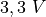 utilisée, elle varie de 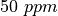 par degré Celsius. Les erreurs de gain et d’offset sont éliminées par une calibration initiale, à l’aide du convertisseur analogique-numérique 16 bits.
Bien que notre premier objectif soit de faire des expériences, nous vous conseillons de lire la brève description du matériel ci-dessous. L’appareil peut être aussi utilisé comme matériel de test pour des expériences d’électricité et d’électronique.
IMPORTANT :
Les tensions extérieures connectées à ExpEYES17 doivent être comprises dans les limites autorisées. Les entrées A1 et A2 doivent être dans l’intervalle 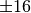 volts et les entrées IN1 and IN2 doivent être dans l’intervalle de 0 à 3,3 V. Des tension excessives peuvent provoquer des dommages permanents. Pour mesurer des tensions plus hautes, diminuez-les en utilisant des diviseurs de tensions.

ExpEYES17
Connexions externes¶
Les fonctions des connexions externes sont expliquées brièvement ci-dessous. Toutes les bornes de couleur noire sont des masses (0 V), toutes les autres tensions sont mesurées par rapport à elles.
Les sorties :¶
Source de courant constant (CCS) :¶
La source de courant constant peut être activée ou désactivée (ON
et OFF) sous contrôle logiciel.La valeur nominale est 1,1 mA mais
peut varier d’une unité à l’autre, à cause de la tolérance des composants.
Pour mesurer sa valeur exacte, connecter un ampèremètre entre CCS
et GND. Une autre méthode consiste à connecter une résistance connue
(environ  ) et mesurer la différence de potentiel
à ses bornes. La résistance de charge doit être inférieure à 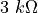
pour cette source de courant.
) et mesurer la différence de potentiel
à ses bornes. La résistance de charge doit être inférieure à 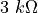
pour cette source de courant.
Tension programmable (PV1) :¶
Elle peut être réglée, par logiciel, à toute valeur comprise dans l’intervalle de -5 V à +5 V. La résolution est 12 bits, ce qui implique une résolution en tension d’environ 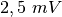.
Tension programmable (PV2) :¶
Elle peut être réglée, par logiciel, à toute valeur comprise dans l’intervalle de -3,3 V à +3,3 V. La résolution est 12 bits.
Signal carré SQ1:¶
La sortie oscille entre 0 et 5 V et la fréquence peut être ajustée entre 10 Hz et 100 kHz. Toutes les valeurs intermédiaires de fréquence ne sont pas possibles. On peut programmer le rapport cyclique. Quand on règle la fréquence à 0 Hz provoque un état HAUT à la sortie, et si on la règle à -1 Hz, la sortie passe à l’état BAS ; dans les deux cas la génération de signal carré est désactivée. La sortie SQR1 comporte une résistance série de 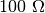 intégrée si bien qu’elle peut commander des DELs directement.
Signal carré SQ2:¶
La sortie oscille entre 0 et 5 V et la fréquence peut être ajustée entre 10 Hz et 100 kHz. Toutes les valeurs intermédiaires de fréquence ne sont pas possibles. On peut programmer le rapport cyclique. La sortie SQR2 n’est pas disponible quand on active WG.
Sortie numérique (OD1) :¶
La tension en OD1 peut être réglée à 0 ou 5 V, par logiciel.
Signal Sinusoïdal/Triangulaire WG :¶
Sa fréquence peut être ajustée entre 5 Hz et 5 kHz. La valeur crête peut être réglées à 3 V, 1,0 V ou 80 mV. La forme du signal est programmable. À l’aide de l’interface utilisateur on peut sélectionner une forme sinusoïdale ou triangulaire. 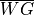 est le signal de WG, inversé..
Entrées :¶
Mesure de capacité en IN1 :¶
On peut mesurer la valeur d’un condensateur connecté entre IN1 et GND. Ça marche mieux pour de petites valeurs de capacité, jusqu’à 10 nF, les résultats sont moins précis au-delà.
Fréquencemètre en IN2 :¶
Celui-ci est capable de mesurer des fréquences jusqu’à plusieurs MHz.
Capteur de résistance (SEN) :¶
Cette entrée est surtout conçue pour des capteurs comme des photorésistances
(LDR), des thermistances, des photo-transistors, etc. L’entrée SEN
est connectée en interne à 3,3 V à travers une résistance de  .
.
Entrées analogiques:math:pm16V, A1 & A2 :¶
Celles-ci peuvent mesurer des tensions dans l’intervalle 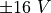. On peut choisir le calibre de 0,5 V à 16 V en pleine échelle. On peut visualiser la tension de ces entrées en fonction du temps, ce qui donne une fonction d’oscilloscope pour basses fréquences. La plus grande vitesse d’échantillonnage est 1 Méch/s pour un seul canal. Chacune des entrées a une impédance de 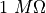 .
Entrée analogique A3 :¶
Celle-ci peut mesurer une tension dans l’intervalle 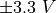. On peut amplifier cette entrée en connectant une résistance entre Rg et GND, gain = 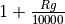. Cela permet d’afficher des signaux de très petite amplitude. L’impédance de l’entrée A3 est 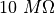.
Entrée Microphone MIC :¶
Un microphone à condensateur peut être connecté à cette borne afin de capturer le signal à la sortie.
Interface pour les capteurs I2C :¶
Les quatre connexions (+5 V, GND, SCL et SDA) situées sur la bande de connexions Berg supporte les capteurs de la famille I2C. Le logiciel peut reconnaître un grand nombre de capteurs I2C disponibles dans le commerce.
Alimentation :¶
Les bornes VR+ et VR- sont des alimentations régulées. Elles fournissent peut de courant, mais assez pour alimenter un ampli-op.
Kit d’accessoires¶
Quelques accessoires sont livrés avec expEYES.
- Fils électriques, avec une borne rigide mâle et avec une pince crocodile.
- Microphone à condensateur avec ses fils.
- Bobine d’induction (2) : du fil isolé 44SWG enroulé dans une bobine de diamètre 1 cm. Environ 3000 tours (il peut y avoir quelques tours de plus). On peut utiliser ces bobines pour étudier l’inductance, l’induction électromagnétique, etc.
- Disque piézo-électrique (2) : sa fréquence de résonance est d’environ 3500 Hz. Il peut être alimenté par la sortie WG ou SQR1. Le disque est enfermé dans une coquille en plastique formant une cavité, qui augmente l’amplitude du son produit.
- Moteur CC : doit être alimenté par une tension continue de moins de 3 V.
- Aimants permanents : (a) diamètre et longueur 10 mm (b) diamètre 5 mm et longueur 10 mm (c) aimants de taille bouton(2)
- DELs 5 mm : rouge, bleue, verte, blanche.
- Condensateurs : 100 pF, 0.1 µF , 1 µF et 22 µF
- Inductances : 10 mH /
,
- Résistances : 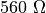,
- photorésistance (LDR )
- Deux diodes silicium (
1N4148) et une diode Zéner de- Transistor NPN (
2N2222)